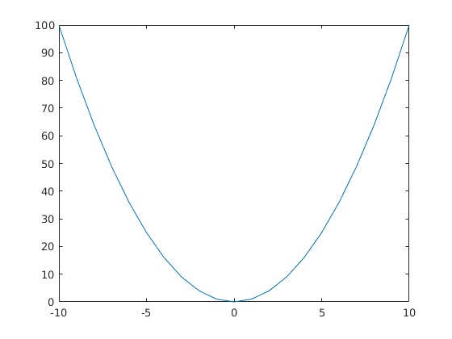

MATLAB Basics
Contents
Four arithmetical operations
You can perform addition by +, subtraction by -, multiplication by * and division by /. For example,
1+2 1-2 1*2 1/2
ans =
3
ans =
-1
ans =
2
ans =
0.5000
Substition
You can substitute a number to a variable by
a=3
a =
3
If you put ; at the end of the sentence, the result will not appear in the command window.
a=3;
Vector and matrix
A row vector is made by
b = [1 2]
b =
1 2
By putting ', a row vector is transposed into a column vector.
b = [1 2]'
b =
1
2
A column vector is also made by
b = [1;2]
b =
1
2
you can make a row vector in which its elements increase from 1 to 10 by
b = [1:10]
b =
1 2 3 4 5 6 7 8 9 10
The degree of increment is specified as
b = [1:2:9]
b =
1 3 5 7 9
A 2x2 matrix is given for example
c = [1 2;0 3]
c =
1 2
0 3
and we obtain the transposed matrix by
c'
ans =
1 0
2 3
Matrix multiplication is done by
b = [1;2]; c*b
ans =
5
6
and to take factorial,
c = [1:5].^2
c =
1 4 9 16 25
Other useful commands
The following commands are often used: To create a n-by-m matrix filled with zeros
n=2; m=3; zeros(n,m)
ans =
0 0 0
0 0 0
To create a n-by-m matrix filled with ones
ones(n,m)
ans =
1 1 1
1 1 1
To create a n-by-n diagonal matrix with ones
n=2; eye(n)
ans =
1 0
0 1
To take the inverse of the square matrix
c = [1 2;0 3] inv(c)
c =
1 2
0 3
ans =
1.0000 -0.6667
0 0.3333
To clear a variable from memory
clear a;
To clear all the variables from memory
clear all;
Warning: The file '/usr/local/MATLAB/R2016b/toolbox/matlab/codetools/private/evalmxdom.m' could not be cleared because it contains MATLAB code that is currently executing. Warning: The file '/home/takeki/Dropbox/teaching/qmmeum/matlab/matlab_basics.m' could not be cleared because it contains MATLAB code that is currently executing. Warning: The file '/usr/local/MATLAB/R2016b/toolbox/matlab/codetools/mdbpublish.m' could not be cleared because it contains MATLAB code that is currently executing. Warning: The file '/usr/local/MATLAB/R2016b/toolbox/matlab/codetools/publish.p' could not be cleared because it contains MATLAB code that is currently executing. Warning: The file '/usr/local/MATLAB/R2016b/toolbox/matlab/codetools/private/evalmxdom.m' could not be cleared because it contains MATLAB code that is currently executing. Warning: The file '/home/takeki/Dropbox/teaching/qmmeum/matlab/matlab_basics.m' could not be cleared because it contains MATLAB code that is currently executing. Warning: The file '/usr/local/MATLAB/R2016b/toolbox/matlab/codetools/mdbpublish.m' could not be cleared because it contains MATLAB code that is currently executing. Warning: The file '/usr/local/MATLAB/R2016b/toolbox/matlab/codetools/publish.p' could not be cleared because it contains MATLAB code that is currently executing. Warning: The file '/usr/local/MATLAB/R2016b/toolbox/matlab/codetools/private/evalmxdom.m' could not be cleared because it contains MATLAB code that is currently executing. Warning: The file '/home/takeki/Dropbox/teaching/qmmeum/matlab/matlab_basics.m' could not be cleared because it contains MATLAB code that is currently executing. Warning: The file '/usr/local/MATLAB/R2016b/toolbox/matlab/codetools/mdbpublish.m' could not be cleared because it contains MATLAB code that is currently executing. Warning: The file '/usr/local/MATLAB/R2016b/toolbox/matlab/codetools/publish.p' could not be cleared because it contains MATLAB code that is currently executing.
To calculate the mean of x
x = [1 2 3 4 5]; mean(x)
ans =
3
To calculate the standard deviation of x
std(x)
ans =
1.5811
To calculate the variance of x
var(x)
ans =
2.5000
To calculate the minimum of x
min(x)
ans =
1
To calculate the maximum of x
max(x)
ans =
5
To see the help, for example
help mean
MEAN Average or mean value.
S = MEAN(X) is the mean value of the elements in X if X is a vector.
For matrices, S is a row vector containing the mean value of each
column.
For N-D arrays, S is the mean value of the elements along the first
array dimension whose size does not equal 1.
MEAN(X,DIM) takes the mean along the dimension DIM of X.
S = MEAN(...,TYPE) specifies the type in which the mean is performed,
and the type of S. Available options are:
'double' - S has class double for any input X
'native' - S has the same class as X
'default' - If X is floating point, that is double or single,
S has the same class as X. If X is not floating point,
S has class double.
S = MEAN(...,NANFLAG) specifies how NaN (Not-A-Number) values are
treated. The default is 'includenan':
'includenan' - the mean of a vector containing NaN values is also NaN.
'omitnan' - the mean of a vector containing NaN values is the mean
of all its non-NaN elements. If all elements are NaN,
the result is NaN.
Example:
X = [1 2 3; 3 3 6; 4 6 8; 4 7 7]
mean(X,1)
mean(X,2)
Class support for input X:
float: double, single
integer: uint8, int8, uint16, int16, uint32,
int32, uint64, int64
See also MEDIAN, STD, MIN, MAX, VAR, COV, MODE.
Reference page in Doc Center
doc mean
Other functions named mean
codistributed/mean gpuArray/mean tall/mean
datetime/mean ProbDistUnivParam/mean timeseries/mean
duration/mean
Using m-files
It is useful to create a m-file to execute several sentences at one time. For example, create the following file and save it as test.m. The part after % is regarded as comments and not executed.
clear all; c = [1 2; 0 3]; % 2x2 matrix b = [1 2]'; % 2x1 vector c*b
Warning: The file
'/usr/local/MATLAB/R2016b/toolbox/matlab/codetools/private/evalmxdom.m'
could not be cleared because it contains MATLAB code that is
currently executing.
Warning: The file
'/home/takeki/Dropbox/teaching/qmmeum/matlab/matlab_basics.m'
could not be cleared because it contains MATLAB code that is
currently executing.
Warning: The file
'/usr/local/MATLAB/R2016b/toolbox/matlab/codetools/mdbpublish.m'
could not be cleared because it contains MATLAB code that is
currently executing.
Warning: The file
'/usr/local/MATLAB/R2016b/toolbox/matlab/codetools/publish.p'
could not be cleared because it contains MATLAB code that is
currently executing.
Warning: The file
'/usr/local/MATLAB/R2016b/toolbox/matlab/codetools/private/evalmxdom.m'
could not be cleared because it contains MATLAB code that is
currently executing.
Warning: The file
'/home/takeki/Dropbox/teaching/qmmeum/matlab/matlab_basics.m'
could not be cleared because it contains MATLAB code that is
currently executing.
Warning: The file
'/usr/local/MATLAB/R2016b/toolbox/matlab/codetools/mdbpublish.m'
could not be cleared because it contains MATLAB code that is
currently executing.
Warning: The file
'/usr/local/MATLAB/R2016b/toolbox/matlab/codetools/publish.p'
could not be cleared because it contains MATLAB code that is
currently executing.
Warning: The file
'/usr/local/MATLAB/R2016b/toolbox/matlab/codetools/private/evalmxdom.m'
could not be cleared because it contains MATLAB code that is
currently executing.
Warning: The file
'/home/takeki/Dropbox/teaching/qmmeum/matlab/matlab_basics.m'
could not be cleared because it contains MATLAB code that is
currently executing.
Warning: The file
'/usr/local/MATLAB/R2016b/toolbox/matlab/codetools/mdbpublish.m'
could not be cleared because it contains MATLAB code that is
currently executing.
Warning: The file
'/usr/local/MATLAB/R2016b/toolbox/matlab/codetools/publish.p'
could not be cleared because it contains MATLAB code that is
currently executing.
ans =
5
6
To plot a 2D figure,
figure; x = [-10:1:10]; y = x.^2; plot(x,y);
For loop
By using "for loop," we repeat increasing the number of index and executing the same procedure. For example,
a = 0; for i=1:5 a = a+i end
a =
1
a =
3
a =
6
a =
10
a =
15
While loop
By using "while loop," we repeat the same procedure until the condition is met.
a = 0; i = 1; while(a<15) a = a+i i = i+1; end
a =
1
a =
3
a =
6
a =
10
a =
15
If clause
If the condition is true, we execute a certain procedure. Otherwise, we do nothing or execute another procedure. For example,
a = 1; b = 2; if (a<b) disp('a is greater than b'); else disp('b is greater than or equal to a') end
a is greater than b
Displaying results
We can display matrix or strings in a format
a = [1 2]; disp(a)
1 2
which is different from
a
a =
1 2
If we want to substitute numbers into strings,
x = 1.5;
disp(sprintf('x is equal to %1.4f',x));
x is equal to 1.5000